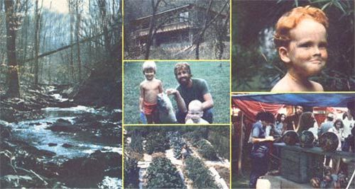

The Joys And Sorrows Of Sycamore Hollow
We can all profit from this report on the Allen family's hard-earned and well-learned lesson in homesteading.
By Dick Allen
November/December 1980
We can all profit from this report on the Allen family's hard-earned - and well-learned - lesson in homesteading.
It's been six years since my family and I put down roots in Tennessee's beautiful Sycamore Hollow. And let me tell you right now that we don't regret a single one of the moments that made up our homesteading days. The past years have been among the richest we have yet experienced.
Nevertheless, we've decided to leave. We're putting our 30-acre rustic farm - and the passive solar, earth-sheltered home that we built ourselves - up for sale . . . even though we don't know where we'll go once the place is sold.
To understand our story - and the reasons for our "shocking" change of direction - you have to go back to that day, years ago, when my wife Kris and I, along with two other couples, pooled our assets to buy a 160-acre plot in northern Tennessee. At that time, each family had one young child (and hopes for more). Lots of other folks were beginning to settle into the area, too . . . in fact, over 100 people came to our first Thanksgiving party! Such promising beginnings made us feel certain that more families would soon join our land-sharing trio, and that - in a matter of a year or two - the surrounding region would grow into a real a community, perhaps with its own alternative school and food co-op!
But that initial year turned out to be the high point - rather than merely the beginning - of the region's homesteading o movement. Since then, the overall population of our immediate locale has slowly declined and, here in Sycamore Hollow, Kris and I and our two boys have had to go it alone for the past two years.
There are many reasons why our former neighbors failed to stay on in these parts (after all, homesteading is never easy!), but two problems seem to have influenced almost every family that left. For one, jobs are hard to come by in this rural region . . . many of our friends had trouble making enough money to keep their homesteads going. And, for another, a lot of people out here ended up feeling too isolated and alone. (Our own farm, for instance, is a mile back from the nearest through road! )
The job problem didn't affect Kris and me too much . . . because our candlemaking and pottery have enabled us to tap into the city economy for income - by selling our wares through urban shops and craft shows - and then to bring our money back to our home in the country. (Not surprisingly, most of our friends who have stayed in the region support themselves by means of their crafts.)
But we've slowly (and painfully) come to the conclusion that our homestead is too isolated for the family . . . especially for our four- and six-year-old boys. To be sure, we couldn't imagine a prettier spot for youngsters to grow up (our farm borders an 11,000-acre state park that has creeks, caves, woods, and waterfalls and is just a few miles from lovely Dale Hollow Lake), but a beautiful natural environment doesn't replace our children's need for peer companionship. Kris and I have tried to be our sons' playmates ourselves, yet we both know the youngsters ought to have some friends their own age.
Now don't get me wrong! We are planning to move out, but that decision is certainly not due to any bitterness or regret. Instead, we all feel that the past six years have been not only rewarding, but invaluable. To tell the truth, when we first settled here, I was little more than a college-trained "lame duck". I had never built anything . . . planted or nourished a tree . . . fixed plumbing . . . kept bees . . . or even simply cared for a piece of land. Looking back, I know that I've gained a lot more real education from our experiences here than I got from my years of institutionalized book learning.
And, aside from being instructive, our labors have yielded some very satisfying results. One of our first projects, for instance, was the establishment of a 1/5-acre French intensive vegetable garden. I remember how several of our friends scoffed when Kris told them we planned to raise food in Sycamore Hollow's heavy, burned-out soil . . . without using any machinery! But over the years we hauled about 130 pickup loads of hay, manure, leaves, and sawdust into our vegetable patch. Our garden now has loose, rich soil - in 15-inch-deep raised beds - and gives bountiful yields. So although we did have to use tillers for the first few years, to work organic matter into the soil, this past spring we were able simply to mulch and plant!
Kris and I also started an orchard of 30 fruit trees the first year and later set out dozens of chestnuts, mulberries, hazelnuts, pecans, persimmons, and shade trees and pines as well. Some of the woody plants are now big enough to climb (and the peaches really produced this year!), but I feel as if I barely got started on my long-range tree-growing plans.
All our "cropping" undertakings, however, were just morning chores compared to our building efforts. As an initial construction project we incorporated an apartment, bathroom, guest room, pottery studio, and candle workshop into our farm's already existing barn. And after that was done, we built a small pole-frame cabin in some nearby woods.
Such warm-up projects sharpened our skills for our major undertaking: the construction of a two-story, passively solar, partially earth-sheltered, superinsulated house. To plan for the building, we spent years reading books - and appropriate articles in MOTHER - until we settled upon the very efficient design that we wanted. Then we labored - using hand tools only - for three solid summers to erect the structure. (I even pushed the water for foundation mortar up the hill to our homesite . . . in a wheelbarrow!)
Besides our time and effort, the house also required every extra cent we could scratch together during the "off" months of those three construction years. I'd estimate that we've sunk about $14,000 worth of materials (at current prices) into the building. And that figure is probably misleadingly low, because we used indigenous cedar, native stone and slate, etc. whenever we could . . . and while those supplies didn't cost any money, our calloused hands and worn muscles are evidence of the fact that we didn't get them "for free"!
Part of the expense, of course, went for insulation. The lower half of the building is made of blocks covered with two inches of styrofoam and a five-inch layer of chicken-wire-reinforced ferro-cement. The exposed walls of the second story (which were framed with six-inch studs) are filled with a full half-foot thickness of fiberglass, and all the windows contain double-glazed panes.
The house is also quite naturally attractive because we sheathed the exterior walls in rough oak, covered the interior walls with tongue-and-groove poplar, laid oak floors throughout (except for those in the pantry and bathroom, which we constructed from local slate) . . . and added about 500 square feet of outside decking.
And our efforts to make a thermally stable home have paid off handsomely! The inside temperature hasn't gone above 80°F during even the hottest summer days . . . and when I checked it on an icy, sunny afternoon last December, the interior was a cozy 68°F!
The house is not quite finished, though. And since we've now decided to move, it's doubtful that we'll ever get to live in it. Believe me, I feel a twinge of anguish each time I recall the summers of sweat and dreams that have gone into building that soon-to-be-left-behind dwelling. But I did learn a great deal from the experience. And since (to improve the home's "sales appeal") we had to abandon our plans for a 12-volt solar cell power system, a composting toilet, and a woodfueled water heater in favor of more conventional utilities . . . I've got lots of unused ideas to try when we build our next, and better, house!
Yes, you heard me right . . . we will build another home. After all, our family's goals haven't changed much. Wherever we go, we'll always be devoted to caring for Mother Earth and working toward a self-sufficient lifestyle. In a way, our years in Sycamore Hollow have made us just that much more prepared for our next stage of living.
The next time around, though, I think we'll settle in an area where we can interact with an already established community rather than have to depend on the potential growth of a new "counterculture". (We'll probably look for a 10- to 20-acre homestead that's at least within bike-riding distance of neighbors and a small town.)
And if anyone ever asks me what other folks might learn from our experience, I'll say that the main lesson is this: You don't have to run out to the most remote area possible to escape the big city rat race. In fact, you may well do better by taking a "middle path" . . . and moving to a place where you can be near friends, and a community, so you can all pursue the good life together.
One thing is for sure, though: I wouldn't want our story to discourage anyone from living on the land. Instead, if you're feeling the urge to get back to a more natural setting and lifestyle, I would definitely advise you to go to it! And when you do make the big move, I hope that the fruits of your labors will be sweet . . . because, friends, we can make life on this paradise planet better, for all of us!
|
 (PHOTOS SUPPLIED BY THE AUTHOR) Scenes form the Allens's years in Tennessee's beautiful Sycamore Hollow include (from left) a wooded stream . . . their hand-built solar home . . . a prize catch. . . their bountiful garden. . . a happy child. . . a candle-selling display at a craft show. . . |
 |
|